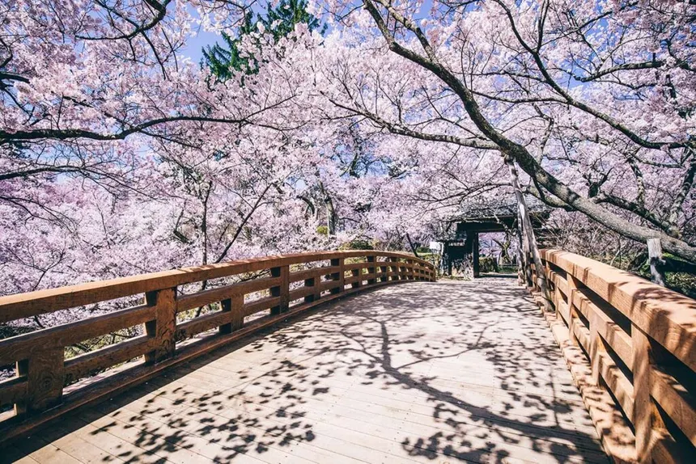
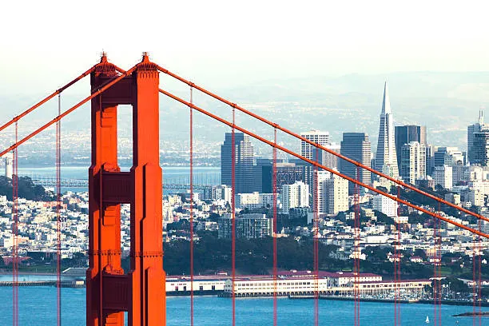
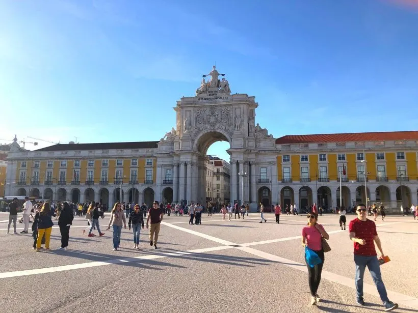

Meu nome é Jeferson Oliveira de Sousa, tenho 30 anos e nasci em Campos dos Goytacazes, no estado do Rio de Janeiro.
Gosto de jogar videogame, ir ao cinema, assistir a filmes e séries, e aproveitar momentos na praia com a família.
stream favorito é a: Netflix.com
Jogos no fim de semana.
Passear na praia sempre que possível.
Os lugares que eu gostaria de visiar.
JapãoA sakura, flor de cerejeira, é um símbolo marcante do Japão. Sua floração na primavera atrai muitas pessoas aos parques para contemplar sua beleza delicada e passageira, representando a breve natureza da vida. |
 |
Estados UnidosSan Francisco é uma cidade vibrante nos Estados Unidos, conhecida pela icônica Ponte Golden Gate. A ponte, com sua estrutura imponente e cor avermelhada, se tornou símbolo da cidade e do turismo local. |
 |
PortugalLisboa encanta com a Praça do Comércio, localizada às margens do rio Tejo. Rodeada por edifícios históricos amarelos, é um símbolo da capital portuguesa e um dos lugares mais visitados da cidade. |
 |